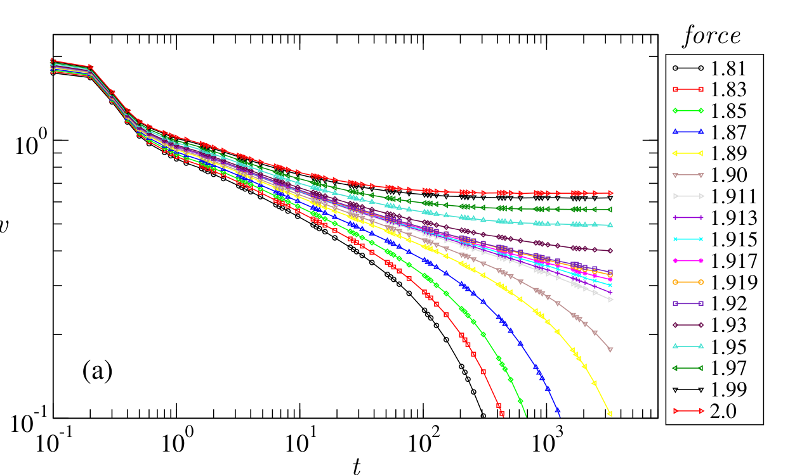
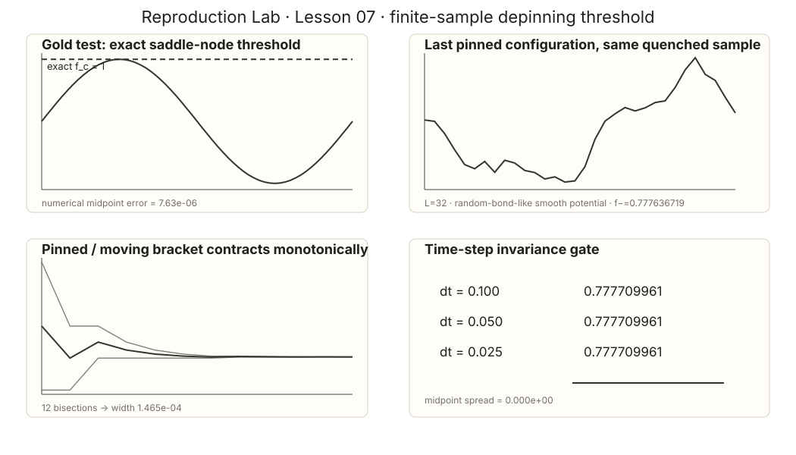

Learning Sliding Ferroelectricity / Reproduction Lab / Lesson 07
Paper2-orientedsource ↔ estimator mapping
先看清论文里的 pinned / moving 分叉，再谈 threshold bracket
这一课以前的问题是把多张“看起来像 depinning”的论文图并排放上去，却没有告诉你它们和 threshold classifier 到底是什么关系。现在只保留最直接的一条证据链：论文的 v(t) 长时间命运 → 我们的 pinned/moving certificate → sample-specific bracket。
先把关系说清：论文图不是我们的“答案模板”。L07 真正借用的是 Ferrero PRE 2013 Fig.3(a) 对 pinned / moving 的动力学定义：低于阈值，长时间速度衰减到 0；高于阈值，速度趋向有限平台。我们的任务是把这条物理分界变成一个可重复的 threshold classifier，再二分得到 sample-specific bracket。
0 · 论文图先回答：什么叫阈值两侧？

论文量
v(t) at fixed f
看 long-time fate：0 还是 finite plateau。
本课量
固定 disorder sample 的 relaxation / traversal certificate。
只输出 pinned / moving。
可比较的只有
阈值两侧的动力学分类逻辑。
不能比较 fc 数值大小。
1 · 我们如何把它变成 threshold search？
先在解析 tilted-washboard 系统上校验分类器：
du/dt=f-\sin u，\qquad f_c=1
随后才进入长度 L=32 的 smooth quenched elastic line。每次二分永远保留两侧证据：最后一个能收敛到 force-balance fixed point 的 f−，以及第一个持续穿越 disorder period 的 f+。

| 检查 | 结果 | 意义 |
|---|---|---|
| analytic classifier | max |fc,num−1| = 7.63×10⁻⁶ | 分类器先恢复已知答案 |
| quenched line | [0.777636719, 0.777783203] | sample-specific bracket |
| bracket width | 1.465×10⁻⁴ | 通过预注册 gate |
| dt=0.1→0.025 | midpoint 无可见漂移 | 数值稳定 |
THRESHOLD GOLD TEST + SMALL-LINE BRACKET PASS。 L07 只授权 threshold-search protocol，不授权 thermodynamic fc、β 或 universality。
2 · 那 Ferrero 的 finite-size fc 图去哪了？
它没有消失，而是被放回真正对应的位置：L11。PRE 2013 的 finite-size critical-force 图实际是 Fig.2，不是旧页面写的 Fig.4(b)。L07 不再同时塞“critical structure + finite-size threshold”两张与当前 classifier 不同量的图。
不能比较：论文的 fc≈1.916、我们的 0.7777、材料实验里的电场阈值，使用不同 disorder normalization / geometry / algorithm / physical units，绝不能横向比数字。